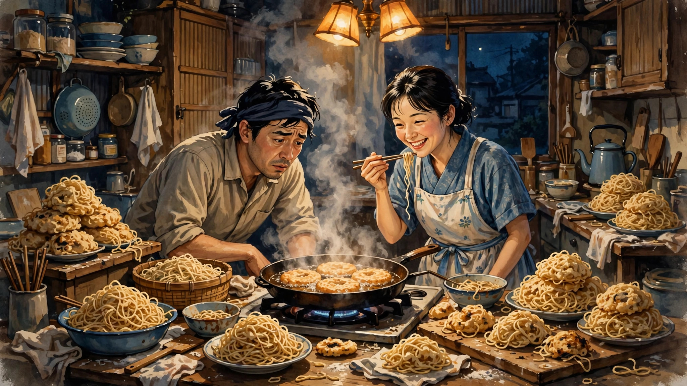
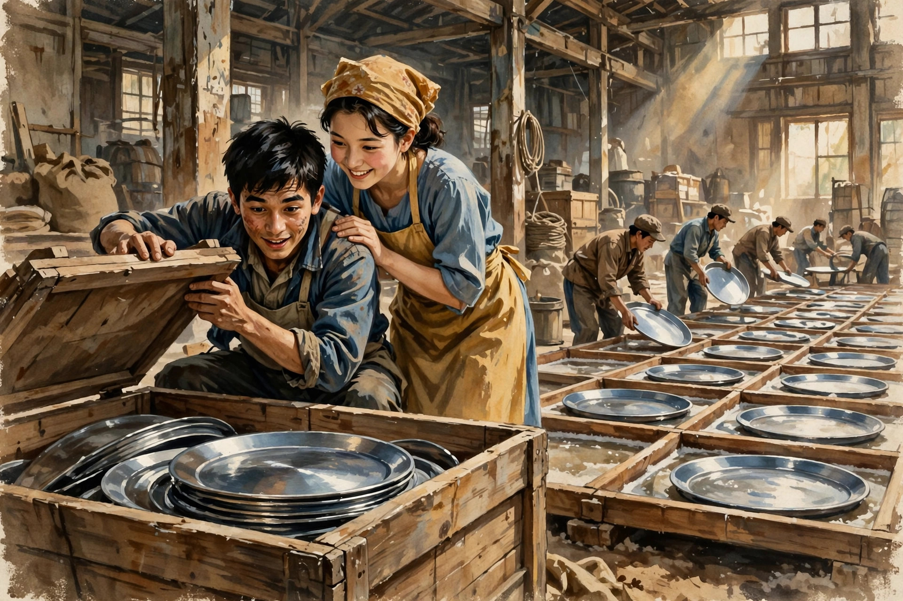

三次创业失败，第四次发明了全世界死宅最爱的“垃圾食品”
我平日里看剧主要是美剧和日剧，基本都是小篇幅，十多集那种体量。很少看长篇剧集，例如日剧中的“晨间剧”这类。倒不是因为瞧不上，其实晨间剧有很多精品。只是动辄一百多集，实在没有精力全部追完。之前追过但没坚持追完的有村花演的《雏鸟》还有能年铃耐的《海女》，都是很好的作品，但不知怎么都没坚持追完。
但最近看的一部《万福》是我第一部一口气追完的晨间剧，虽然长达150集（我看的3集打包版，也有50集）。也不能说这部就好到天上了，不知为什么就一路吸引我看完了。这里想随便分享下我对这部剧的感受，也许分享完我就能找到答案了。
这部剧主要讲述的是方便面发明者安滕百福（原名吴百福，台湾裔）的生平以及他发明方便面这一划时代产品的创业励志故事。但和其他晨间剧一样，这部剧的实际主角是这位发明家（剧中角色名为立花万平，下称“万平”）的妻子立花福子（下称“福子”），从本质上来说算是部“大女主剧”。

以下尽量简略介绍下剧情，不算剧透。剧中除男女主人公外，还有一些主要人物：福子的母亲今井铃，二姐克子，二姐夫忠彦，大姐咲，大姐夫真一，万平的朋友世良。剧情主线是男女主的几次创业经历。第一次创业是刻章，灵感来自战后很多人失去身份，需要刻章来证明自己的身份。第二次创业是制盐，起因是万平接手一个便宜的“盲盒”仓库，发现里面有一些钢板。后来又偶然发现钢板可以用来晒盐，进一步制盐。于是，学了制盐工艺，招了一些人来制盐。过程虽然坎坷，但最后还设立了盐业公司，业务也慢慢稳定下来。第三次创业是做保健食品“达内丰”，研制成功后，市场上也取得了一定的成功。前三次创业过程十分艰辛，中间万平两次遭人陷害入狱，虽然最终都有惊无险脱离危险，但身心遭受了严重的打击（这些都是根据安滕百福的真实经历改编的）。

在前三次创业都以失败告终后，万平获得一个难得的职业机会，受邀担任当地一家信用社的董事长。之后万平一家过上了一段太平幸福的小康日子。但永远有新鲜念头冒出来的“发明家”万平始终不甘心就此平淡地度过一生，以致后来利用一个客户项目的契机重新走上发明创造之路。只可惜这次万平的决定过于莽撞，因为信用市场紧缩，而自己前期投入过多，导致自己无力偿债，连抵押的房产都被银行收走。好不容易过上小康生活的一家，又不得不回到原点。
回到原点后不久，万平开始了第四次创业，正是这次创业让他成功走到了人生和事业的巅峰。这次创业带来的是一款可以说是改变了人类饮食习惯的划时代商品——方便面（起初叫速食拉面）。方便面的研发过程也充满了无数次的试验、失败、再试验、再失败，最后才形成了今天我们熟悉的配方。
万平的创业之所以能最终成功，既归功于万平个人的奇思妙想，也离不开福子以及其他家人和朋友的不懈支持。万平的才华和创新思维固然重要，但如果没有福子不离不弃、始终如一的无条件支持，他也不可能最终获得成功。就连一向玩世不恭的世良也对万平说，你能走到今天，完全靠的是福子（大意）。举例来讲，第三次创业后万平一家本可以过上安稳幸福的日子，但因为万平的一时头脑发热，竟然弄到倾家荡产财产归零的田地。一般这种情况下，妻子直接拂袖而去也不为过。但福子真不是一般人，她对丈夫的信任甚至到了盲目的地步。她坚信，即便从零开始，只要她丈夫有头脑，总有翻身的一天。虽然上帝视角的观众看到万平此次的所作所为恨得咬牙切齿，但事实证明福子的信任是对的。这充分说明，福子对丈夫的信任并不是出自盲目的爱，而是对丈夫的真正了解。这样的夫妻关系，才可以配得上“灵魂伴侣”这个说法吧。
作为本剧主线的万平福子的创业故事的确感人和励志，但作为副线的家庭故事也让人十分动容。除了重点讲述万平和福子的婚姻生活和创业历程外，本剧还生动地描写了福子两位姐姐及姐夫以及万平夫妇的一些多年挚友的群像。这些群像戏也为本剧增色不少。
大姐虽然早逝，但以可爱的“托梦”身份贯穿整剧始末。初看虽小小惊悚，但有时也感觉挺可爱。大姐夫真一性格温和仗义，也十分重感情。大姐逝去后，一直与福子一家保持紧密的联系。他多次热心地对万平夫妇出手相助，最后还正式加入万平的事业，成为万平重要的左膀右臂。多年来，他已经从内心里认同自己是福子的家人，以致多年后当他终于决定再婚时，还特地郑重地带着妻子来到克子家，向老太太铃以及福子和克子请求谅解和祝福。
二姐克子温柔贤惠，一直默默地支持画家丈夫。不但承担起养育四个子女的重担，还始终鼓励和支持丈夫从事喜欢的艺术工作。即使自己的家庭并不宽裕，克子仍然十分重视亲情。多次接济万平夫妇及自己的母亲。在相当多的时间，克子家甚至可以说是铃这个大家族的中心所在。大家有什么事也喜欢来找克子夫妇。二姐夫忠彦看似木讷，始终专注于自己的艺术世界。但实际上他也有颗火热的心，对妻子儿女是这样，对亲友也是如此。他乐于助人，不求回报。第一款方便面的外包装就是他应万平之邀设计的。虽然设计得很成功，他也没有以此居功，而是发自内心地为万平高兴。他对子女外表严肃，其实内心充满爱怜。对徒弟也是不厌其烦，用心培养。总之是个外冷内热型的人。
至于总以“武士之女”自居的老太太铃，观念保守，而且从来不吝展现她的毒舌。她从一开始就反对万平和福子的婚事，简单说不看好“不务正业”的万平。觉得自己的每个女儿都应该嫁给在“大公司”做“正经”工作的人。所以她从心底里是不看好克子和福子的婚姻的。一直到了第三代，她的婚姻观都没变过。万平福子的创业过程中，她也没少在一旁泼凉水，说风凉话泄气话。有时感觉她的人设活脱脱地就是《西游记》中动不动吵着散伙要回高老庄的“二师兄”。除了毒舌外，老太太还有些其他的小毛病，例如虚荣（喜欢听奉承话），臭美（喜欢主动请缨做些不适合她做的事，例如当模特）。但这些小毛病无伤大雅，还显露了她的一些可爱面。虽然前面说了老太太这么多缺点，她有时也的确让观众看得厌烦，但这种性格话说到底不过是“刀子嘴豆腐心”。这一点在最后一集她办生前葬礼这件事上集中体现出来。老太太虽然一直数落自己的几个女婿，但其实心里早就认可他们了，尤其是万平。毒舌归毒舌，怨言归怨言，老太太对儿女的事业和家庭一直都在实际出力。行动是爱最好的证明。
写到这里，我开始有点明白为啥我能一口气追完这部“又臭又长”家长里短的晨间剧了。是因为真实。也许电视剧不像人物传记那么准确记录，但人的感情都是相通的。真实地表现了人的感情，人物立体丰富了，故事自然也就真实感人了。这就是我心目中优秀电视剧的标准。